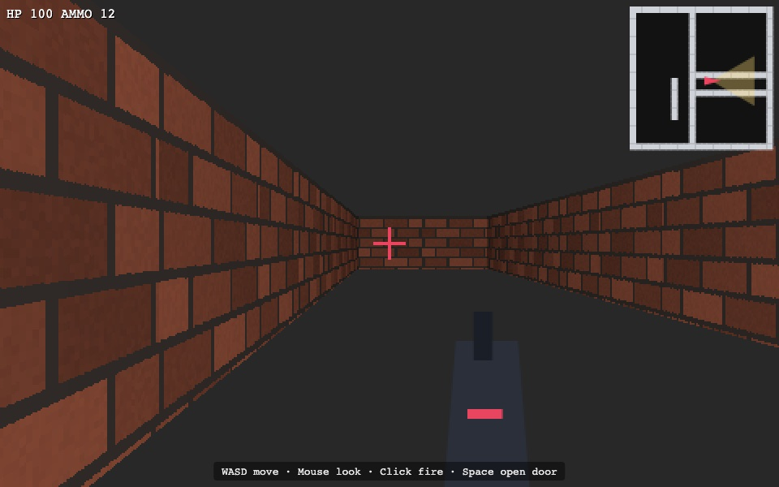

24 November 2026 · Agentic task loop · first-person raycaster
Raycaster Shooter · Inkling 2 Mini · Splash 1.7.2 · UD-Q8_K_XL · Tenaz main + Pi · thinking low · run 2
Tenaz ended COMPLETE after 36 min, 32 sessions and 11 tasks; T002 and T009 were sent back once and accepted on the second attempt, the rest and the first final review accepted first time. Not playable: the player cannot turn. Mouse look never starts, because the click handler calls document.requestPointerLock, which Chromium does not have, and A/D strafe, so there is no turn key. The spawn faces a wall half a cell ahead; the door can be reached only by strafing around it, and leads to a corridor. Two of the three east areas are sealed off, floor and ceiling are flat grey, and the one enemy was not seen. The user, playing by hand: the mouse does not turn, not playable.

What was checked
- Runner final state COMPLETE on 24 November 21:09:57.478 UTC: 11 tasks done, none pending. Bootstrap passed its three steps first time (19 requirements, none counted manual by Tenaz; 11 tasks). Nine tasks passed verify and review on their first attempt; T002 (the reviewer asked for a corridor and a barrel partly hidden at spawn) and T009 (sprites drawn with putImageData erased the walls behind them) were sent back once each and accepted on attempt 2. Two replans added nothing. Final review cycle 1 returned ACCEPT with verify passing and all 19 requirements covered; it listed the model's own R20 (straight walls, playable) as manual because it could not look at screenshots.
- Runner events: 32 sessions, none stopped or failed; no watchdog actions, reverts, context compactions, provider errors, capacity limits or engine retries. No reply stopped at the output limit: the stop reasons are 233 tool use and 32 stop, and the largest reply is 5,020 tokens of the 16,384 allowed.
- Configuration: identical to UD-Q8_K_XL run 1. The engine start and stop scripts, go and launch scripts, brief and Tenaz binary are byte-identical, and the pinned run state differs only in paths, times and results: Pi 1.6.0 over RPC with the openai-completions provider splash, thinking low, text input only, a 131,072-token context window and max_tokens 16,384; Tenaz main 3f43405 with defaults, temperature 1.0, generic engine, sandbox off. Splash was started fresh for this run from the same install. The preflight reported reasoning, cache and tools true and vision not tested.
- `verify --all` on a clean clone of the final commit 0eb2105 with the run's node_modules: 19 of 19 passed (T000.smoke to T011.docs), as Tenaz recorded. Playwright found its Chromium in the user-wide browser cache, so no copy of the browsers was needed. Model-written checks that test state and math, not playability.
- Played by Claude with Playwright in Chromium's new headless mode, holding keys, against the build served from the run's dist, then by the user by hand. Map: 24 by 24 cells. A west room (columns 1 to 9) holds the spawn; a wall at column 10 with one door at (10,12) separates it from three east areas, split by walls along rows 11 and 14. The door leads into a two-row corridor (rows 12 and 13, columns 11 to 22); the north-east (rows 1 to 10) and south-east (rows 15 to 22) areas are sealed off, with no way in.
- The player cannot turn. On a canvas click, src/main.js calls document.requestPointerLock() only if typeof document.requestPointerLock is 'function'; in Chromium only elements have that method, so pointer lock never starts, and the mousemove handler turns the player only while pointer lock is on. A/D and the arrow keys strafe; no key turns. The user: the mouse does not turn, not playable.
- Spawn (6.5,12.5) faces east at a wall at column 7, half a cell ahead (the model meant it as a stub to half-hide a barrel). The door, which R13 asks to be 4 cells ahead in view, can be reached only by strafing around that wall (A, W, D), then Space. The barrel was not seen in play.
- Floor and ceiling are flat grey: src/raycaster.js fills every pixel above and below each wall column with rgb(40,40,40), drawn over the per-pixel floor and ceiling casting that src/floor.js draws first (R6, which the final review marked met). The same function takes its wall texture from an option that defaults to brick and is never set, so every wall seen in play was brick, although textures.js builds brick, stone and wood.
- Combat: game.js puts one enemy at (16.5,12.5) in the corridor. In the headless replay it was not visible down the corridor, and 6 shots (ammo 12 to 6) hit nothing visible; whether it is not drawn or had moved was not investigated. Ammo starts at 12. Health stayed 100.
- Better than run 1: index.html sizes the 480x300 canvas to 100vw by 100vh with image-rendering: pixelated, so the game fills the window as the brief asks.
- Engine metrics: one Splash process wrote 269 Done summaries. The first 4 belong to this run's preflight; all 265 proxy records match the remaining 265 one-to-one, in order and uniquely by (prompt, output, cached), ending at the last summary in the log. For all 32 sessions the matched summaries' fresh input, cached and output tokens equal the usage Tenaz journaled. TTFT comes from Splash's 'TTFT of request' lines.
- Memory: Tenaz's 135 host samples report memory pressure normal throughout. Wired memory went from 23.9 GiB at the first sample to a maximum of 46.1 GiB, and free memory fell to 0.13 GiB at its lowest. Swap use stayed at 13.2 GiB, already in use before the run. Tenaz sampled Splash's Python parent (0.24 to 0.49 GiB), not its engine, so no engine footprint is recorded.
- Public artifact: `vite build --base ./` of the final commit 0eb2105 in the clean clone; its JavaScript bundle is byte-identical to the run's own dist, and its index.html differs only in the script path (./assets in place of /assets, since the project's vite config sets no base). Plain canvas code with no URLs in the bundle. Screenshot: Claude's headless replay at 960x600, after strafing through the door into the corridor.
Limits of this evidence
Completion is the runner outcome. The second run of the UD-Q8_K_XL thinking-low setup (Inkling 2 Mini as Unsloth's UD-Q8_K_XL GGUF on Splash 1.7.2 with the DFlash2 drafter at a 128K context, Pi thinking low, text only, temperature 1.0, Tenaz main 3f43405), with nothing changed but a fresh Splash start. Run 1 built a more playable game than the UD-Q4_K_M thinking-low run; this repeat is not playable, with different serious bugs (no way to turn, a spawn facing a wall, flat floor and ceiling, two sealed areas), while it fixed run 1's unscaled canvas. At temperature 1.0 the spread between two runs of one setup is larger than the gap run 1 showed between 8-bit and 4-bit, so the two UD-Q8_K_XL runs together do not show that 8-bit plays better. Decode medians: 66.1 tok/s here, 71.6 in run 1, 87.1 for UD-Q4_K_M.
Configuration
The model, serving engine and agent used for this execution.
| Field | Value | Detail |
|---|---|---|
| Model · primary | Inkling 2 Mini · primary · reasoning low (Pi thinking level low; Splash started with --default-reasoning-effort low). Splash logged every request as 'effort low · thinking off', yet the replies carried reasoning: Pi counted 43,407 reasoning tokens. | Unsloth Dynamic UD-Q8_K_XL GGUF (Inkling-2-Mini-UD-Q8_K_XL.gguf, 22,867,452,896 bytes, sha256 2da51788d43a17e1f033bec420fa83ba9cb87ac1f0130dc9135a4d2ed2678b68), the same Splash install as UD-Q8_K_XL run 1: Splash logged that the model was already installed and its install is unchanged since then. |
| Checkpoint · primary | unsloth/Inkling-2-Mini-GGUF:UD-Q8_K_XL | primary model artifact · revision 8078d149286eec7193795413b9e0643da6d11fa1 |
| Model · drafter | Inkling 2 Mini DFlash2 · drafter | — |
| Checkpoint · drafter | incoai/Inkling-2-Mini-DFlash2 | drafter model artifact · revision 4f9088ea66c21f2b99ed657d1941c306b03e84d2 |
| Runtime | Splash 1.7.2 · Homebrew formula splash 1.7.2; the engine start script wrote `splash --version` (Splash 1.7.2) before starting it · One splash serve process, started fresh for this run at 20:33:38 UTC and running until after COMPLETE; registered with Tenaz as a generic engine with start and stop scripts and reached through Tenaz's proxy. --model unsloth/Inkling-2-Mini-GGUF:UD-Q8_K_XL --offline --no-webui --max-context 128K --default-reasoning-effort low --idle-release off, from start and stop scripts byte-identical to run 1's. Startup log: 'Ready · context 128K · text only', SSD prefix cache up to 13.3 GiB, routed experts held in memory (15,553 MiB), --verify-rows auto; no Neural Engine line. Temperature 1.0 pinned through Tenaz's proxy; top-p and top-k left to Splash, whose Inkling defaults are 1.0 and 0. Pi's max_tokens 16,384 (fixed in this Tenaz build). mode | inference engine and exact build |
| Harness | Pi coding agent over RPC driven by Tenaz main 3f43405 (it reports 0.8.0 (3f43405)) 1.6.0 | the agent or client that drove the run |
| Runner | Tenaz main · build 3f43405 after 0.8.0 (unreleased) | open-source runner, github.com/aartiles/tenaz · how the runner evolved |
| Hardware | Apple MacBook Pro · 64 GB unified memory | hardware recorded for this execution |
| Workload | Raycaster Shooter · revision 1 | One-shot raycaster brief by @ddalcu, as posted by @Beamsters1, used verbatim as the Tenaz brief (sha256 5c3cf17c..., the same file as run 1 and the other Raycaster runs); the local model wrote its own spec, verify and task plan. Per-session context budget 85,196 tokens (0.65 of 131,072). Text only: builders and reviewers could not look at screenshots. No operator action after launch. The second run of this setup; run 1 is 2026-11-24-inkling-2-mini-udq8kxl-splash-v172-thinking-low-tenaz-main-3f43405-pi-raycaster-shooter. |
| Context window | 131,072 tokens | maximum context configured for the serving runtime |
| Repetitions | 1 | executions recorded for this workload; one means an indicative result, not an estimate |
Inference measurements
Engine-side rates for this run. Each figure states its own statistic; figures from different runs are not interchangeable.
| Metric | Value | Definition |
|---|---|---|
| TTFT · median | 0.262845 s | Median engine-reported TTFT ('TTFT of request' lines, millisecond precision) across matched requests. · n=265 · 90th percentile 2.55 s, mean 0.884 s, maximum 17.2 s; 1 requests over 10 s. Includes the run's cache mix; not a prefill rate. |
| Decode · per-request median | 66.1 tok/s | Median of Splash's per-request decode rate across matched requests. · n=265 · 10th percentile 51.8, 90th percentile 97.7 (linear interpolation). Median 66.7 below 16K prompt tokens (186 requests), 61.4 from 16K to 32K (79); no prompt reached 32K. |
| Decode · output-weighted | 63.0093 tok/s | Total output tokens divided by the sum of each request's output tokens over its decode rate. · n=265 |
| Tokens per decode cycle · drafter | 4.0146 tokens/cycle | Output-token-weighted mean of Splash's tokens per decode cycle with the DFlash2 drafter (median 4.1). · n=265 · Splash logs tokens per cycle, not drafted and accepted counts, so this is not an acceptance percentage. |
| Host wired memory · median | 34.08 GiB | Median host wired memory across Tenaz's 30-second samples from start to end of the run. · n=135 · 23.9 GiB at the first sample, maximum 46.14 GiB. Host-wide, includes every process. |
| Swapped in during the run | 0.001 GiB | Swap-in pages summed over Tenaz's memory samples (91 pages of 16 KiB); host-wide swap I/O, not resident memory. · n=135 · Memory pressure normal in every sample. |
Agent session counters
Agent-wide usage totals. These include reasoning, tool calls and waiting, and are not model decode speed.
| Metric | Value | Definition |
|---|---|---|
| Run elapsed | 36.1 min | Session 001 start after the preflight (24 November 20:33:53.787 UTC) to COMPLETE (21:09:57.478 UTC); includes tools, checks and reviews. · n=1 · 36 min 3.7 s; no pauses. |
| Agent sessions | 32 sessions | All harness sessions: 3 bootstrap, 13 builder, 13 reviewer, 2 replan and 1 final reviewer. · n=1 |
| Sessions ended early | 0 sessions | Sessions with ok=false. · n=32 |
| Operator interventions | 0 actions | No pauses, relaunches, configuration changes or edits after the first session started. · n=1 |
| Model responses | 265 responses | All proxy request records of this run; none ended in error. · n=1 |
| Matched model requests | 265 requests | Proxy records matched one-to-one, in order and uniquely to Splash Done summaries by (prompt, output, cached). · n=265 · 4 earlier summaries, from this run's preflight, unassigned and excluded. |
| Tool calls | 247 calls | Sum of harness tool_calls across all 32 session records. · n=32 |
| Context compactions | 0 compactions | Compaction count across all session records. · n=32 |
| Responses stopped at the output limit | 0 responses | Proxy records that stopped at the 16,384-token output limit. · n=265 · Largest reply 5,020 tokens. |
Context and token counters
Token totals as reported by the harness or engine. Cached and cumulative figures are not additive with fresh input.
| Metric | Value | Definition |
|---|---|---|
| Maximum prompt context | 32,592 tokens | Largest prompt across matched requests; not the configured server window. · n=265 · Tenaz's per-session context peak, which adds the reply, reached 32,952 tokens of the 85,196 budget, in 012-builder-T004. |
| Cumulative input | 3,932,012 tokens | Sum of total prompt tokens across matched requests, including repeatedly reused context; not unique input. · n=265 |
| Cached input | 3,674,048 tokens | Sum of prompt tokens Splash reported cached across matched requests. · n=265 |
| Fresh input | 257,964 tokens | Total prompt minus cached prompt tokens across matched requests. · n=265 |
| Output tokens | 110,930 tokens | Sum of output tokens across matched requests, reasoning included. · n=265 |
| of which reasoning output | 43,407 tokens | Reasoning tokens in Pi's usage, summed over the 32 journaled sessions. · n=32 · 39.1% of the output. |
| Prompt-cache token share | 93.4394 % | Cached prompt tokens divided by total prompt tokens, weighted by tokens across matched requests. · n=265 |
Recorded check counters
Counts from the checks recorded with this run.
| Metric | Value | Definition |
|---|---|---|
| Tasks completed | 11 tasks | Final task cards marked done; none active, todo or blocked. · n=11 |
| Reviews returning changes | 2 reviews | Task review verdicts returning CHANGES: T002 and T009, attempt 1 each; the other 11 task reviews and the single final review returned ACCEPT. · n=13 |
| Project checks passing | 19 checks | Checks passing in `verify --all` on a clean clone of the final commit, rerun after the run. · n=19 · Model-written checks, not an independent acceptance suite. |
Request records & provenance
265 numeric request records in proxy order, each matched one-to-one to a Splash Done summary by total prompt, output and cached tokens. TTFT comes from Splash's 'TTFT of request' lines and decode from its Done lines. The preflight's summaries are excluded. No prompts, tool results, session identifiers or local paths are included.
Run ID: 2026-11-24-inkling-2-mini-udq8kxl-splash-v172-thinking-low-tenaz-main-3f43405-pi-raycaster-shooter-run2
One execution, with checks transcribed from the retained record. A completed session is not a quality score. Measurement method · All runs